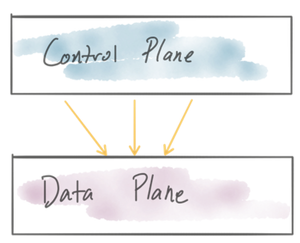
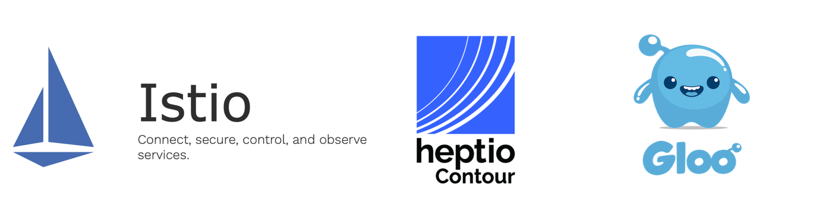
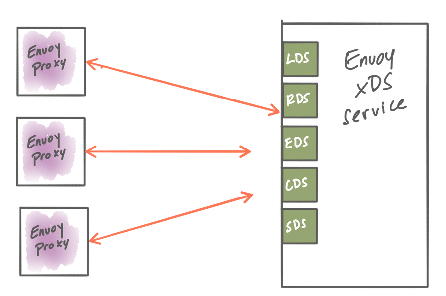

如何为 Envoy 构建一个控制面来管理集群网络流量
前言
这篇文章我看了之后非常想翻译，为什么呢？一方面我也在学习 Envoy，并且在公司的实际项目中使用 Envoy，另一方面，我确实也在设计一个控制管理端来统一管控多个集群的所有流量，没错我说的是所有的流量管控。目前这个管理系统在内部已经在逐步使用起来了。所以翻译这篇文章，即学习 Envoy 技术，也是想做一个参考，印证我的想法是不是 OK 的，取长补短。
指导在服务边缘构建控制面来管理 Envoy Proxy，让它作为服务网关或者在服务网格中使用
Envoy 已经成为了一个非常流行的网络组件了。Matt Klein 几年前写过一篇博文，就在讨论 Envoy 的动态配置 API 和它如何成为 Envoy 被采用越来越多的原因之一。他在博文中说这是“统一数据面板 API”（UDPA）。随着很多其它项目都采用 Envoy 作为其核心组件，可以毫不夸张的说 Envoy 不仅仅建立了标准 API，而且对于应用 7 层的网络解决方案来说：“Envoy 已经变成了在云原生架构下的统一数据平面”。
而且，由于 Envoy 的统一数据平面 API，我们可以看到业界开发了很多针对基于 Envoy 技术设施进行配置管理的管理系统。本文将会深入讨论为 Envoy 构建一个控制平面需要什么，大家可以通过这些信息来评估什么样的基础设施最适合你的组织和场景。因为这个是一个很大的话题，作者会出一个系列文章来对此进行详细说明（后面我也会挑一些我感兴趣的文章进行翻译学习）。
在 EnvoyCon/KubeCon 论坛有很多非常好的讨论，这里好多组织都分享了他们采用 Envoy 的经验，也包括了如何构建他们自己的控制平面。下面是一些他们为什么选择自建控制平面的原因：
- 现有的解决方案构建在不同的数据平面上，而且已经有了控制平面，需要在这里兼容 Envoy。
- 为不包含任何开源基础设施来构建，或者使用其它的 Envoy 控制平面（比如：VMs， AWS，ECS 等）。
- 不需要使用所有 Envoy 的特性，只是需要一部分。
- 为了更好适配自己的工作流和工作视图而需要为 Envoy 配置开发专属领域的 API 对象模型。
- 要线上使用，但是发现其它的控制平面并不够成熟。

然而，仅仅因为有些早期使用者构建了他们自己的控制平面，这并不意味着你也应该做这样的事情。首先在去年中很多为 Envoy 开发的控制平面已经相当成熟了，所以你应该在决定要重新开发另外一个控制平面之前先来研究一下这些已经存在的。其次，正如 Datawire 的人们发现，并且 Daniel Bryant 最近也发文章说，为 Envoy 构建一个控制平面并不是那么容易的。
我参与开发几个为 Enovy 构建控制平面的开源项目。比如，Gloo 是一个功能性网关，它可以作为强大的 Kubernetes 接入服务，API 网关，或者作为从单体服务到微服务过度的功能网关。Gloo 有一个针对 Envoy 的控制平面，它可以作为我这个系列文章的例子，来说明如何在控制平面上按照需求来抽象设计，以实现插件管理和扩展性管理。其它可以参考的已经实现的控制平面如 istio 和 Heptio Contour，这些也是贯穿我这个系列文章中的好例子。如果你确定要自己开发控制平面，那么除了这些，你还可以参考其它一些已经存在的控制平面。

在这个系列文章中，我们将会关注以下一些关键点：
- 采用一种机制可以动态更新 Envoy 的路由，服务发现和其它配置。
- 识别使用哪些组件来构成你的控制平面，包括了后端存储，服务发现 API，安全组件等等。
- 根据场景和团队组织以最合适的方式建立任意制定区域的配置对象和 API。
- 思考如何在需要的地方以最好方式嵌入控制平面。
- 部署各种控制平面组件的方式。
- 思考如何测试控制平面。
要开始这一系列的讨论，我们首先来看看如何在 Envoy 运行时，使用 Envoy 的动态配置 API 来更新 Envoy，以处理拓扑和部署中的变更。
使用 Envoy 的 xDS API 动态配置 Envoy
在 Envoy 之上构建构控制平面的主要方便支持处在于它的数据平面 API。有了数据平面 API，我们可就可以动态的配置 Envoy 的大多数重要运行时设置。通过 xDS API 进行的 Envoy 配置是被设计为最终一致性的，没有一种方法可以对集群中的所有代理进行原子性的更新。当控制平面上有配置更新时，它就通过 xDS API 让数据平面代理都可以获取到，每个代理都是相互独立的来获取应用这些配置。
下面是我们可以通过 xDS 动态配置 Envoy 的部分运行时模型：
- 监听发现服务（LDS）API - LDS 用于下发服务监听的端口。
- 终端发现服务（EDS）API- EDS 用户服务发现。
- 路由发现服务（RDS）API- RDS 用于流量路由决策。
- 集群发现服务（CDS）- CDS 用于可以路由流量过去的后端服务。
- 密钥发现服务（SDS） - SDS 用户分发密钥（证书和密钥）。

这些 API 使用 proto3 的 Protocol Buffer 来定义的，并且已经有一些相关实现了，可以提供大家在构建自己的控制平面时参考：
虽然每个 xDS（LDS/EDS/RDS/CDS/SDS，这些统称xDS）都是可以动态可配置的，但是这并不意味着你必须动态配置所有内容。你可以组合适应，区分静态配置和动态配置。例如，要通过配置实现一种类型的服务发现：希望终端是动态的，但是集群在部署的时候就是已经知道路由信息了，所以你可以使用 Envoy 中的 Endpoint Discovery Service 来静态的定义集群的配置。如果在部署的时候你不确定是那个上游集群，那你可以使用Cluster Discovery Service来动态的配置发现上游。关键是你可以构建一个工作流和处理流程来静态的配置你需要的部分，而且可以使用动态 xDS 服务在运行时发现你需要的部分。为什么有不同的控制平面实现，其中一个原因就是并不是所有人都有一个完全动态和可替代的环境（这个环境下所有的配置都应该是动态的），这点几乎不可能。根据现有条件的约束和可用工作流，要为你的系统采取合适级别的动态配置，而不是全动态配置。
在 Gloo 的实现中，我们基于 go-control-plane 的实现来构建控制平面，实现了 xDS API 到 Envoy 的动态配置。Istio 和 Heptio Contour 也是使用这种方式。这个控制平面的 API 使用 gRPC streaming 实现，并且留了实现接口，所以我们在实现的时候只需要实现这些接口就可以了。这种方式可以以非常高效的方式把 Envoy 数据平面 API 集成到控制平面中。
gRPC streaming 方式并不是唯一的更新 Envoy 配置的方法。在Envoy 早期版本中的 xDS API，轮询是唯一检测是否有新配置可用的方式。虽然这也是接受的，并且也符合配置更新最终一致性的原则，但是在网络和计算使用上还是不够高效。也比较困难去调整优化轮询配置以减少资源浪费。
最后，一些 Envoy 管理系统的实现采取生成静态 Envoy 配置文件和给 Envoy 周期性的覆盖写入磁盘上的配置文件，再执行Envoy 进程的热重启。在高度动态环境中（像 Kubernetes，实际上任何短暂的计算平台都算），管理这种文件的生成，传递，热重启等等会显得非常笨重。Envoy 最初就是在这样操作的（Lyft公司创建这个项目是就是这样），但是它逐步发展到现在的 xDS API了。
总结
Gloo 团队相信使用 gRPC streaming 和 xDS API 来实现对 Envoy 的动态配置和控制是一种比较好的方式。同样，并不是所有的 Envoy 配置都应该是动态的，尤其是你不需要动态配置的内容。但是如果你是在一个高度动态的环境（比如在 Kubernetes 中），动态配置 Envoy 就很关键了。其它的环境或许也有这样的需要。不管怎么样，动态配置使用 gRPC streaming API 是最理想的，主要有以下一些好处：
- 事件驱动配置更新；在控制平面中配置会在可用的时候下发到 Envoy。
- 不需要轮询配置变化了。
- 不需要热重启 Envoy。
- 不会中断流量。
下一步
这是系列文章的第一部分，我们只是建立了为 Envoy 构建控制平面的基本概念，简述了 xDS API 和对 Envoy 动态配置不同的考虑。在下一节，会在几天后发布，将会把控制面分解成为可部署的组件，确定你需要的组件，特定领域对象会是什么样子？以及对控制平面扩展插件的思考。
关注「黑光技术」，关注大数据+微服务